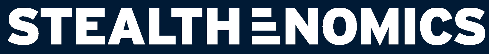

Only metrics directly linked to actions in this plan. Full performance data in the monthly report.
Big improvement: March had 8 registrations (Traffic campaign, no pixel, no UTMs). April hit 34 after switching to Conversions objective + UTM tracking. But ad registrants had only 28% show-up vs 89% from the SMB list — email reminders (not sent for April) would likely close this gap.
| Stage | Registered | Attended | Show-up % |
|---|---|---|---|
| Ready to take action soon | 9 | 6 | 67% |
| Comparing providers or approaches | 4 | 3 | 75% |
| Actively researching solutions | 9 | 2 | 22% |
| Just starting to explore | 12 | 4 | 33% |
Insight: 13 registrants were "ready to act" or "comparing" — and 9 of them showed up (69%). These are the highest-value leads. The 21 who are "researching" or "exploring" had only 29% show-up — email reminders + community nurture could recover these for May.
We created 2 new campaigns (Webinar-Conversions + Retargeting) and kept the old Traffic campaign for comparison.
| Campaign | Results | Cost/Result | Spend | Budget | Reach | Link Clicks | Verdict |
|---|---|---|---|---|---|---|---|
| Webinar-Conversions NEW | 24 registrations | $13.91 | $353.87 | $40/day | 4,053 | 79 | WORKING |
| Retargeting — Funnel NEW | 17 LP views | $4.35 | $73.98 | $15/day | 13,352 | 137 | WORKING |
| Webinar — Traffic (OLD) | 1,603 LP views | $0.28 | $450.60 | $20/day | 46,270 | 1,835 | VANITY |
The switch worked. Traffic campaign spent $450 and got 1,835 clicks but only vanity metrics — no actual registrations tracked. Conversions campaign spent $354 and got 24 real registrations at $13.91 each. Retargeting is the cheapest way to re-engage warm visitors ($4.35/LP view). The old Traffic campaign ended Apr 21 — should not be relaunched. The retargeting campaign is also growing our community (8 → 19 members), building a warm base to invite for future webinars.
Goal: Fix tracking, set up infrastructure, start pushing registrations immediately.
| What Was Planned | Status | Owner | What Happened / Result |
|---|---|---|---|
| Meta pixel on Zoom via HubSpot | DONE | Demond | Pixel fires on HubSpot thank-you page. Enabled the Conversions campaign that got 24 registrations at $13.91 each. |
| Create UTM spreadsheet + tagged links | DONE | Marina | UTM tool published. Result: we now know 25 regs came from Ads vs 9 from SMB List, and that SMB List has 89% show-up vs 28% from Ads. |
| Switch Meta to Conversions objective | DONE | Marina | Old Traffic campaign: $451 spent, 1,835 clicks, 0 tracked regs. New Conversions campaign: $354 spent, 24 real registrations. Game changer. |
| Create SMS campaign copy | DONE | Marina | Templates created. Not yet deployed — needs integration with HubSpot. |
| SMB landing page new layout | DONE | Beverly | Layout updated. Retargeting campaign drives 17 LP views at $4.35 each through it. |
| Chris's LinkedIn access | PAUSED | Marina | Email sent, friction with the team. Personal profiles get 561% more reach — untapped, but blocked. |
| Email campaign content (webinar + community) | DO FOR MAY | Marina | Not done for April. Impact: ad registrants had only 28% show-up (no reminders). SMB List had 89% (they were emailed). Must create full sequence for May 26. |
| LinkedIn outbound brief | PAUSED | Marina | Brief created. Outbound stopped when Jerico left. No registrations from this channel. |
| Daily engagement + account warming | CHECK | Beverly | Was Jerico → Beverly. Need to verify consistency. Community has 19 members but only 3 active/week, 0 comments. |
| Lead qualification automation in HubSpot | NOT DONE | Marina | No lead scoring in place. 13 of 34 registrants were "ready to act" or "comparing" — these should be prioritized automatically. |
Goal: Turn on all traffic sources with 1 week until webinar.
| What Was Planned | Status | Owner | What Happened / Result |
|---|---|---|---|
| Google Ads launch ($50/day) | DONE | Demond | Live since Apr 14. 6 missing GA4 conversion events identified (Purchase, Webinar Reg, Form Submit, Diagnostic, Blueprint, Strategy Call) — email sent to Anishkar. |
| Meta retargeting campaign | DONE | Marina | 17 landing page views at $4.35 each, 137 link clicks, 13,352 reach on $74 spend. Most efficient campaign for re-engaging warm visitors. |
| Webinar promo content | DONE | Marina | Copy + creative direction created. Supported the Conversions campaign that drove 25 of 34 registrations from ads. |
| Company LinkedIn (5x/week) | ONGOING | Beverly | Running. ER dropped from 17.9% (March) to 10.1% (April) — needs investigation. |
| YouTube (daily) | ONGOING | Beverly | Running. 38 subscribers (lost 1 in April, 0 gained). 1,556 views in April (down from 34,938 in March — mostly paid). Adjusting to new content calendar + reduced hours. May strategy has a stronger content plan. |
| Facebook + Instagram (3x/week) | ONGOING | Beverly | Running. Engagement campaigns feed retargeting pool: SMB engagement = 58,727 results at $0.01 each. |
| Community posts (3x/week) | ONGOING | Beverly | Running. Community grew from 8 → 19 members (+138%). But only 3 active/week, 0 comments — engagement is low. |
| Content approval (daily) | ONGOING | Marina | Daily review of Beverly's scheduled posts. |
| Webinar email flow check | DO FOR MAY | Marina | Not done for April. Consequence: 28% show-up from ads (no reminders) vs 89% from SMB list (emailed). Biggest gap to close for May. |
| Chris LinkedIn posts (3x/week) | PAUSED | Beverly | Blocked by friction. 0 registrations from this channel. Untapped. |
| LinkedIn outbound (10-20/week) | PAUSED | — | Jerico out. 0 registrations from outbound. No capacity. |
| DM post engagers | PAUSED | — | Jerico out. No capacity for manual DMs. |
Goal: Final push to drive registrations for April 21 webinar.
| What Was Planned | Status | Owner | What Happened / Result |
|---|---|---|---|
| Email reminders (3d, 1d, 3h before) | DO FOR MAY | Marina | Not done. Direct consequence: ad registrants had 28% show-up (18 no-shows). SMB list had 89% (emailed). If reminders had lifted ads show-up to even 50%, we'd have had ~20 attendees instead of 15. |
| Countdown content (daily across channels) | DONE | Beverly | Countdown posts ran across channels. Repeat for May 26 — start 7 days before. |
| Ads review + optimize | DO FOR MAY | Marina | Conversions campaign worked ($13.91/reg) but budget was $40/day — the plan called for $80/day. Doubling budget for May could push toward 50 regs. IT engagement ($0.57/profile visit, $400 spent) needs review. |
| Registration tracking (daily) | DO FOR MAY | Marina | Tracked post-webinar but not daily during countdown. For May: daily UTM tracking to know which sources are converting in real time. |
| Free Diagnostic promotion | DROPPED | Beverly | Page live but underperforming: 48 views, 74% bounce, 0 new contacts. Needs improvement before promoting as alt CTA. |
Goal: Execute webinar, follow up, capture conversions, plan next cycle.
| What Was Planned | Status | Owner | What Happened / Result |
|---|---|---|---|
| WEBINAR execution (Apr 21, 12PM EST) | DONE | Marina + Chris | 34 registrations (target: 20 ✓), 15 attended (target: 10 ✓), 11 max concurrent. 44% overall show-up rate. |
| Post-webinar emails (recording + follow-up) | DONE | Marina | Recording sent to 19 no-shows. Community invite to all. Launch Box offer to 15 attendees. |
| Webinar data tracking (regs by source) | DONE | Marina | Ads: 25 regs → 7 attended (28%). SMB List: 9 regs → 8 attended (89%). Warm list outperforms ads 3x on show-up. |
| Post-webinar content (cuts, carousels) | ONGOING | Beverly | Webinar cuts for YouTube + recap carousels for LinkedIn in production. Feeds retargeting pool for May. |
| Shift content to value/community | ONGOING | Beverly | Less webinar urgency. Community grew 8 → 19 members. Retargeting campaign is driving this growth — warm base for May invites. |
| Retargeting: attendees → Launch Box | PAUSED | Marina | Retargeting worked ($4.35/LP view, 13K reach) but paused post-webinar. Reactivate for May with warm audience of 19 community members + all April registrants. |
| HubSpot pipeline (end-to-end) | NOT DONE | Marina | No pipeline to track the 13 high-intent registrants ("ready to act" + "comparing") through to sales. Critical for May. |
| Ads review: Google vs Meta quality | PENDING | Marina | 6 missing GA4 events identified. Email sent to Anishkar. Can't compare Google vs Meta lead quality until Purchase + Form events are tracking. |
| Conversions API connection | NOT DONE | Demond | Still pending. Would reduce current $13.91/reg by ~19%. At 24 regs that's ~$63 saved/month. Follow up. |
| Monthly report to leaders | NOT DONE | Marina | Due Apr 30. Now have data: 34 regs, 15 attended, $354 on Conversions, community at 19, diagnostic underperforming. |
| Plan May webinar | NOT DONE | Marina | May 26 (4th Tuesday). Apply learnings: double Conversions budget, add email reminders, countdown content, retarget warm base of 19 community + 34 registrants. |
| # | Task | Owner | Deadline | Why |
|---|---|---|---|---|
| 1 | Monthly report to leaders (Mar + Apr) | Marina | Apr 30 | Overdue. Need to collect April data and compile. |
| 2 | Review + relaunch Meta campaigns | Marina | May 5 | Campaigns paused. Optimize from April data before relaunching. |
| 3 | Verify Beverly's daily engagement + warming | Marina | This week | Jerico's tasks were reassigned — need to confirm consistency. |
| 4 | Create May content calendar | Marina + Beverly | May 10 | Monthly cadence. Strategy + copy direction. |
| 5 | Set up full email flow in HubSpot | Marina | May 12 | Invite + 3 reminders (3d, 1d, 3h) + post-webinar. April's biggest gap. |
| 6 | Follow up: Conversions API with Demond | Marina | May 12 | 19% lower CPL. Free to implement. Still pending. |
| 7 | Follow up: GA4 conversion events with Anishkar | Marina | Waiting | 6 missing events identified (Purchase, Webinar Reg, Form Submit, Diagnostic, Blueprint, Strategy Call). |
| 8 | Blog brief for SEO | Marina | May 15 | Monthly cadence. Coordinate with Demond. |
| 9 | HubSpot pipeline: finalize + test | Marina | May 19 | Must be ready before webinar to track leads end-to-end. |
| 10 | Launch webinar countdown content | Beverly | May 19–26 | Daily countdown across all channels. Didn't happen in April. |
| 11 | Improve Free Diagnostic page + drive traffic | Marina | May 12 | 48 views, 74% bounce, 0 new contacts. Page needs work: clearer value prop, shorter form, stronger CTA. Then activate: exit popup on landing page, 20% of organic CTAs, email P.S. mentions. |
May 26 Webinar: "How to Build Predictable Cash Flow in Real Estate — Even Without Prior Experience" — 12PM EST. This is for the SKLES client (Sean K. Langston). StealthEnomics webinar follows same cadence: 4th Tuesday of each month.
| Campaign | $/day |
|---|---|
| Webinar Conversions (Meta) | $80 |
| Google Search Ads | $50 |
| Engagement SMB + IT (Meta) | $25 |
| Retargeting (Meta) | $15 |
| Boost best organic (Meta) | $15 |
| TOTAL | $185 |
| Change | Why |
|---|---|
| Meta lead gen: $100 → $0 | Fake leads, bot entries. Cut entirely. |
| Google Search: $0 → $50 | Demand capture — real search intent. |
| Webinar Conversions: $40 → $80 | Doubled — this is the sales engine. |
| Boosting + Retargeting: $0 → $30 | New — build warm audience cheaply. |
| Task | Owner | Cadence | Status | Notes |
|---|---|---|---|---|
| Content production + scheduling (all channels) | Beverly | Daily | ONGOING | Company LI, YouTube, FB, IG, Community |
| Daily engagement (comments + DMs) | Beverly | Daily | CHECK | Was Jerico → Beverly. Verify consistency. |
| Account warming | Beverly | Daily | CHECK | Was Jerico → Beverly. Verify consistency. |
| Approve content daily | Marina | Daily | ONGOING | Review Beverly's scheduled posts. |
| Ads review (Meta + Google) | Marina | Tuesdays | PAUSED | Resume when campaigns relaunched for May. |
| Weekly report + team check-in | Marina | Fridays | ONGOING | Marina pulls data directly (no Jerico). |
| Content calendar for next month | Marina + Beverly | 10th of month | ONGOING | Next: May 10. |
| Blog brief for SEO | Marina | 15th of month | ONGOING | Coordinate with Demond. First: May 15. |
| Monthly strategy report | Marina | Monthly | ONGOING | Send to leadership by email. |
| LinkedIn outbound (10-20/week) | — | — | PAUSED | Jerico out. No capacity. Revisit later. |